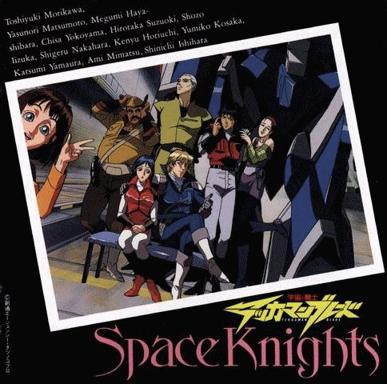

Tekkaman Blade

Useful Links
Anime Web Turnpike: Tekkaman Blade Links
(you have to scroll down a bit)
Gameboy Games
Tekkaman Blade
SNES Games
Tekkaman Blade
Anime Video Game Resource Center © 1998 by
Luis A. Cruz